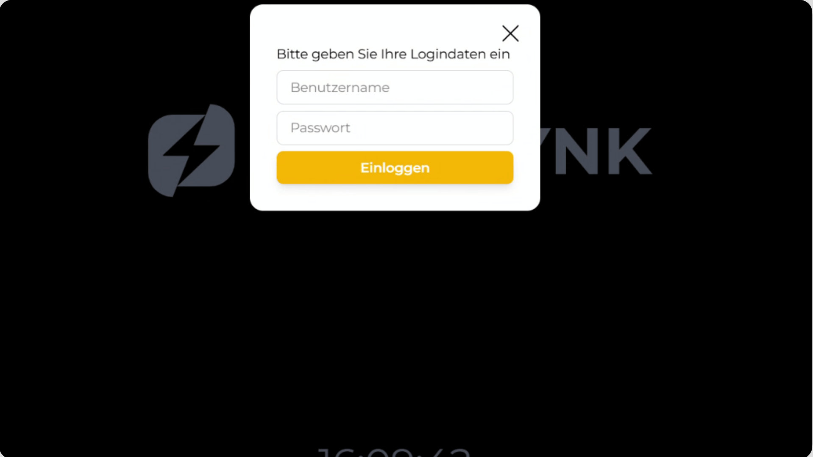
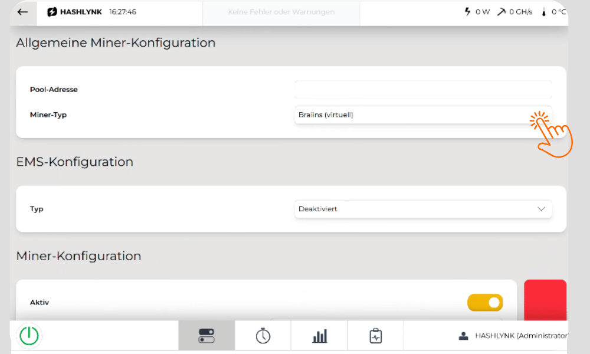
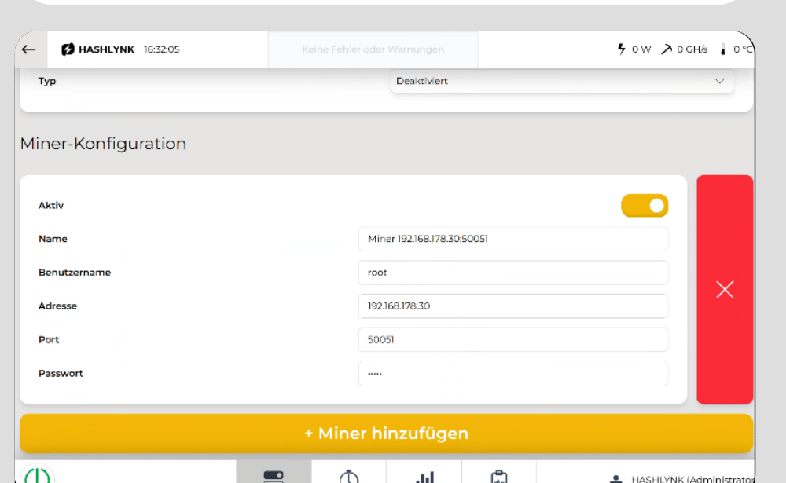

Alles, was du für die Inbetriebnahme wirklich brauchst. Für Details gibt es unten das vollständige Handbuch.
Bedient wird er standardmäßig per Fernwartung über RustDesk von einem zweiten Gerät aus (PC, Laptop oder Tablet). Nur wenn zusätzlich der optionale 10" Touchmonitor angeschlossen ist, geht es auch direkt am Gerät vor Ort.

Buch dir 2 Stunden Inbetriebnahme-Beratung direkt mit unserem Team — inklusive Miner- & EMS-Anbindung.
Termin buchen →Drei Komponenten Standard, Touchmonitor optional in eigener Verpackung.
Reihenfolge einhalten. Boot-Vorgang ca. 60 Sekunden.
In die Versorgungsbuchse auf der Rückseite.
Schutzkontakt-Steckdose im selben Raum.
RJ45, mindestens Cat 5e — der Controller braucht Netzwerk für RustDesk.
HDMI + USB, falls vorhanden. Sonst weiter per RustDesk.
Status-LED leuchtet durchgehend, sobald bereit.
Alle Aktionen laufen über die HashLink-Oberfläche, die du per RustDesk (oder Touchmonitor) siehst.
Power-Button drücken, Boot-Vorgang abwarten (ca. 60 Sek.), bis die Status-LED durchgehend leuchtet.
RustDesk auf deinem PC/Laptop öffnen, die RustDesk-ID vom Geräte-Datenblatt eingeben, verbinden, Passwort eingeben. Alternativ direkt am Touchmonitor.
Standard: Benutzer User / Passwort 1234. Direkt danach unter Benutzerverwaltung ändern — Werks-Zugangsdaten sind nicht sicher.
Unter Systemeinstellungen → Miner-Konfiguration jedes Mining-Gerät mit IP-Adresse, Port und Zugangsdaten hinzufügen und verifizieren.
Unter EMS-Konfiguration das passende Energie-Management-System wählen — die Verbindung wird automatisch hergestellt.
Schwellwerte und Zeitfenster festlegen, dann den Einschalt-Button auf Grün setzen. System läuft automatisch.


Missachtung kann zu Personen- und Sachschäden führen.
Vor Anschluss/Wartung Netzteil vollständig trennen. Nie mit feuchten Händen berühren.
Anschluss (230 V AC) & Wandmontage nur durch Elektrofachkraft. Sonst Garantieverlust.
Nur trockene Innenräume, mind. 5 cm Abstand rundum.
Außer Reichweite aufbewahren. Eingriffe nur durch autorisiertes Servicepersonal.
Für die tägliche Bedienung, Wandmontage und rechtliche Details.